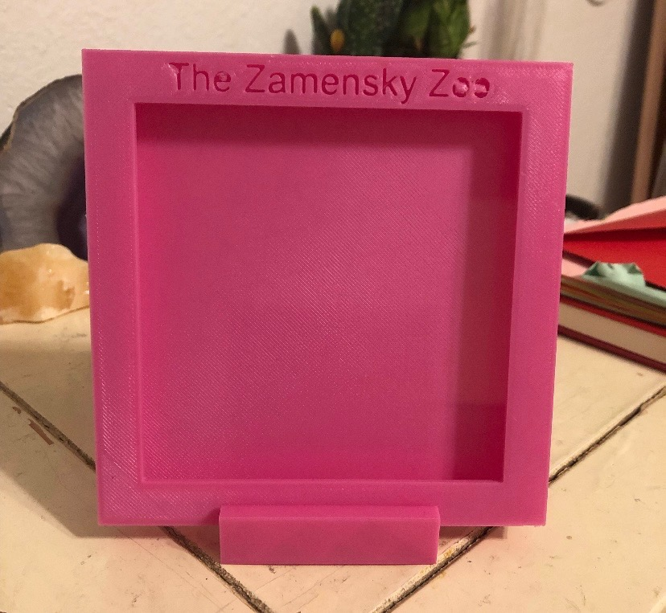
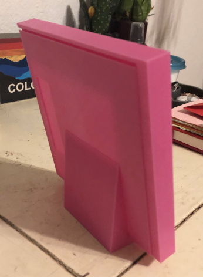

For this project we were allowed to design anything we wanted with one of the only requirements being a joint of some sort. I took the opportunity to make a picture frame for my mom for Christmas, equipped with our last name on the front, a holding piece and a sliding joint on the back to keep the picture in place. She of course still uses it today. Using Fusion 360 gets easier and easier the more I do so, especially regarding joints. The 3D printers in Atlas gave me a very tough time for this project but it was all worth it!

